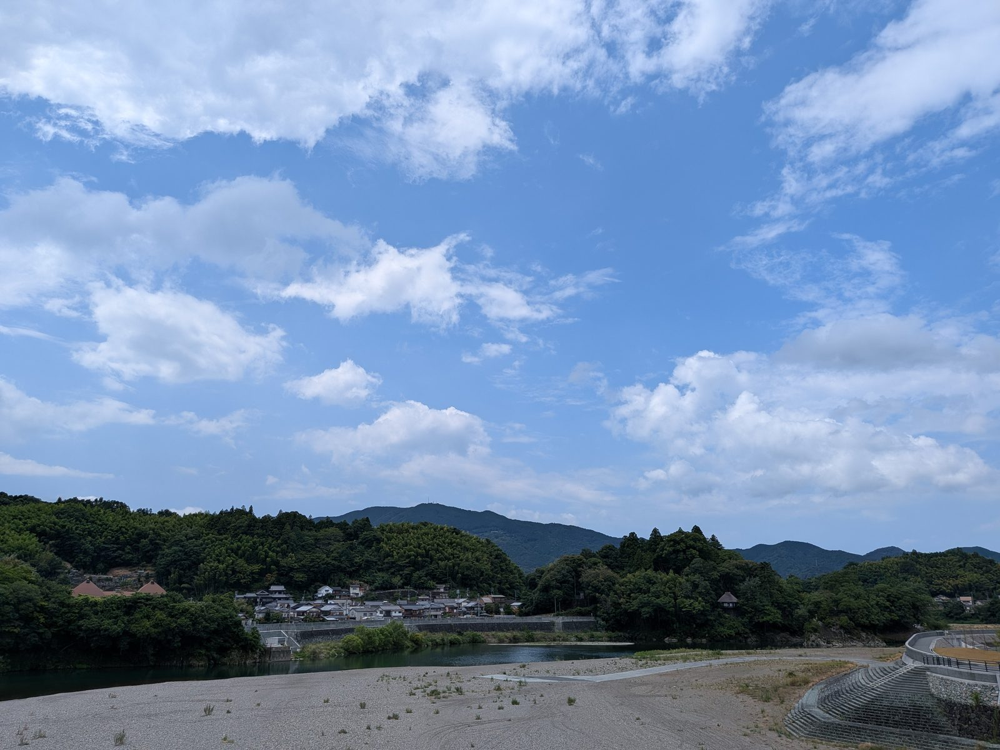

大洲の視点 ・ 出典: 気象庁「大洲」アメダス観測データ（1978～2025年）、環境省熱中症予防情報サイト ・ 約6分で読める

要点
「昔はもっと外で遊べた」という話は、たぶん誰でも一度は口にする。
本当に暑くなったのか。気象庁のデータで確かめてみた。
最初に確認しておきたいのが観測地点だ。気象庁は大洲市東大洲（旧大洲測候所）にアメダス観測点を持っている。
標高20ｍ、観測所番号0959。気温の観測は1978年１月から続いている。
松山の数字で代用する必要はなく、大洲そのものの記録が使える。
2000年前後と直近を比べるつもりで、５年おきの７月・８月を並べた。日ごとの最高気温を１日ずつ数え直したものだ。
| 年 | 月 | 平均気温（℃） | 平均最高気温（℃） | 月内最高気温 | 真夏日（30℃以上） | 猛暑日（35℃以上） |
|---|---|---|---|---|---|---|
| 2000 | ７月 | 27.2 | 32.6 | 36.9℃（7/20） | 29日 | ５日 |
| 2000 | ８月 | 27.3 | 32.8 | 35.9℃（8/24） | 28日 | １日 |
| 2005 | ７月 | 26.5 | 31.7 | 35.8℃（7/23） | 23日 | ５日 |
| 2005 | ８月 | 27.2 | 33.1 | 35.9℃（8/11） | 28日 | ４日 |
| 2010 | ７月※ | 26.5 | 31.8 | 36.0℃（7/24） | 23日 | ３日 |
| 2010 | ８月 | 28.4 | 34.7 | 36.7℃（8/3） | 31日 | 13日 |
| 2015 | ７月 | 25.8 | 31.0 | 36.5℃（7/31） | 23日 | ２日 |
| 2015 | ８月 | 26.5 | 32.4 | 36.3℃（8/1） | 24日 | 10日 |
| 2020 | ７月 | 25.6 | 30.2 | 35.6℃（7/21） | 16日 | １日 |
| 2020 | ８月 | 29.0 | 35.9 | 38.3℃（8/17） | 31日 | 25日 |
| 2025 | ７月 | 27.6 | 34.0 | 35.5℃（7/9） | 29日 | ８日 |
| 2025 | ８月 | 27.9 | 33.7 | 37.0℃（8/3） | 27日 | 11日 |
※2010年７月は気象庁データ上「一部データ欠測（許容範囲内）」の印つき。気象庁の基準では統計上ほぼ正常値と同等に扱われる。
「真夏日」「猛暑日」は、その月のうち日最高気温が30℃・35℃以上だった日数。
この６年分だけを見ると、7-8月の平均気温は27.2℃から27.1℃、平均最高気温は32.8℃から32.9℃で、ほとんど動いていない。
一方で猛暑日は年10.3日から19.0日へ、約1.8倍になっている。
ここで手を止めた。５年おきに６年だけ抜き出した比較は、選び方しだいで結論が変わってしまう。
実際、2005年は７月に猛暑日が５日、８月に４日あった「暑い年」だし、2015年７月は２日しかない「涼しい年」だ。どちらを前半に置くかで倍率が動いてしまう。
なので、観測が始まった1978年から2025年まで、７月と８月の全日の最高気温を１日ずつ数え直した。
欠測でデータが取れなかった1980年を除く47年分、2,914日分になる。
10年ごとの平均にまとめると、こうなった。
1980年代は年に1.5日。2020年代は年に20.7日。約14倍だ。
ところが、同じ期間の真夏日（30℃以上）を並べると、まったく違う絵になる。
48.7日 → 48.4日 → 52.0日 → 52.5日 → 52.3日。
47年かけて3.6日しか増えていない。７月と８月は合わせて62日しかないので、2000年代の時点ですでに「８割以上が真夏日」で、これ以上は増えようがない水準に達している。
7-8月の平均最高気温は31.43℃ → 33.30℃で、1.87℃上がった。
整理するとこういうことになる。「毎日30℃を超える」という状態は昔からそう変わっていない。変わったのは、その上に35℃以上の日が積み上がったことだ。
暑さの平均が横にずれたというより、分布の上のほうの裾が長く伸びた、という言い方が近い。
体感で「昔と違う」と感じているのは、たぶんこの裾のほうだと思う。
47年のうち、７月・８月に猛暑日が１日もなかった年は９回あった。
その９回が、1979・1982・1985・1986・1987・1989・1993・1997・1999年。全部1999年以前だ。
逆に、猛暑日が10日以上あった年は23回。このうち1999年以前は1990・1994・1995・1998年の４回だけで、残り19回は2001年以降に集中している。
1990年代は「ゼロの年」と「20日超えの年」が数年おきに入れ替わる、振れ幅の大きい時代だった。
2000年代以降は、その振れ幅が下から切り上がっている。大洲では、35℃を一度も超えない夏という選択肢が、四半世紀以上ないままだ。
この話を「昔は涼しかった」でまとめると、間違える。
7-8月の平均最高気温を年ごとに並べると、歴代１位は1994年の34.29℃だ。
2018年（33.94℃）も2024年（33.93℃）も、この年には届いていない。猛暑日の日数でも1994年は21日で、47年中８位に入る。
1994年は全国的な記録的猛暑・少雨の年として知られていて、大洲もその例外ではなかった。
極端に暑い夏そのものは、昔から起きていた。変わったのは、そういう夏が「たまに来る異常」ではなく「だいたい毎年来るもの」になったことのほうだ。
気象庁が公表している大洲の日最高気温 観測史上１～10位（2026年８月時点）はこうなっている。
10件のうち８件が2004年以降で、それ以前のものは1994年の２件だけ。ここでも1994年だけが例外的に食い込んでいる。
そして2026年の夏は、この10件に２日ぶんも入った。８月２日の37.9℃が６位、７月27日の37.7℃が９位だ。
ついこの前の話で、しかも１シーズンで２回、歴代トップ10を書き換えている。
年平均気温のランキングでは、傾向がもっとはっきりする。歴代１～10位のうち９つが2007年以降で、唯一の例外が1998年。
トップは2024年の17.1℃だった。日単位の記録より、年単位の平均のほうが素直に上がっている。
ここが、データを見ていて一番腑に落ちた部分だ。
2000年前後には、そもそも「猛暑日」という言葉が存在しなかった。
気象庁がこの語を予報用語に加えたのは2007年４月で、35℃以上の日が増えたことに対応した追加だった。
さらに大きいのが、熱中症をめぐる仕組みの変化だ。
2000年前後には、この仕組み自体がなかった。だから「暑いけど外で遊ぼう」が普通の判断になり得た。
今は同じ気温でも、アラートが出れば中止という判断が自動的に入る。
気温が上がったことと、判断の基準ができたことは、別々に効いている。
47年分を数え直して分かったのは、体感としての「昔は遊べた」がおおむね正しかった、ということだった。
ただし正しさの中身は「平均気温が上がった」ではなく、「猛暑日が年1.5日から20.7日になった」のほうにある。
そしてそこに、猛暑日という言葉と、アラートという仕組みが後から乗った。
今の子どもが外で遊びにくいのは、この２つが重なった結果だと思う。